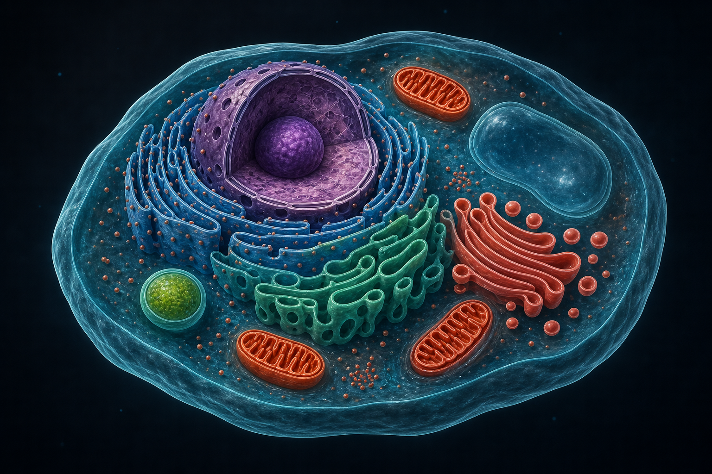
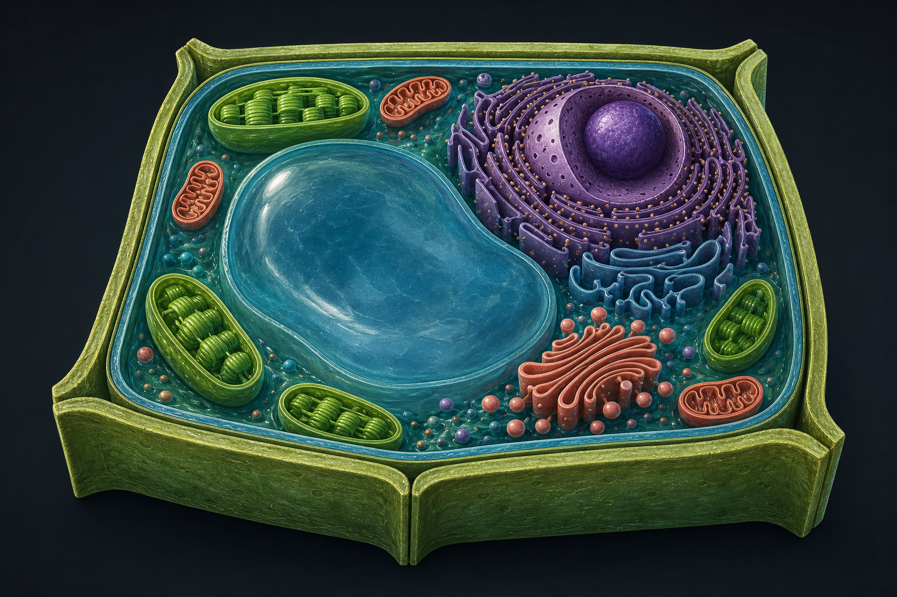
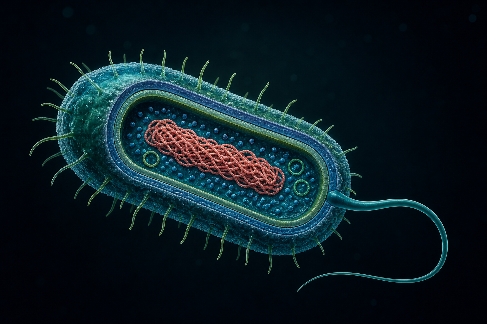

Las organelas: pequeños órganos
Así como nuestro cuerpo tiene órganos especializados —corazón, pulmones, cerebro—, la célula eucariota tiene organelas (u orgánulos): estructuras internas rodeadas por membranas, cada una con una función específica. Esta compartimentalización permite que ocurran simultáneamente reacciones químicas que serían incompatibles si estuvieran todas mezcladas en el citoplasma.
Las células procariotas no tienen organelas membranosas, lo que limita su tamaño y complejidad. La aparición de las organelas fue un paso evolutivo clave que permitió la existencia de organismos pluricelulares complejos.
Tres modelos celulares
Compará las estructuras presentes en cada modelo. Las referencias funcionan como una guía de observación; los colores son convencionales y no representan colores reales.

- 1. Membrana
- 2. Citoplasma
- 3. Núcleo
- 4. Mitocondrias
- 5. Ribosomas
- 6. Retículos
- 7. Golgi
- 8. Vesículas

- 1. Pared celular
- 2. Membrana
- 3. Vacuola central
- 4. Cloroplastos
- 5. Núcleo
- 6. Mitocondrias
- 7. Retículos
- 8. Golgi

- 1. Cápsula
- 2. Pared celular
- 3. Membrana
- 4. Citoplasma
- 5. Nucleoide
- 6. Plásmidos
- 7. Ribosomas
- 8. Flagelo y pili
Organelas principales
Membrana plasmática
Es la barrera selectiva que rodea a la célula. Formada por una doble capa de fosfolípidos con proteínas insertadas (modelo de mosaico fluido). Regula qué entra y qué sale: permite el paso de algunas sustancias (agua, gases) y bloquea o transporta activamente otras. Mantiene la homeostasis celular. Sin membrana, la célula no podría existir como unidad independiente.
Núcleo
El centro de control de la célula. Rodeado por una envoltura nuclear con poros que regulan el paso de moléculas. Contiene el ADN organizado en cromatina (cromosomas durante la división). Dentro del núcleo se encuentra el nucléolo, donde se fabrican los ribosomas. El núcleo dirige la síntesis de proteínas y la reproducción celular.
Mitocondria
La central energética de la célula. Tiene doble membrana: una externa lisa y una interna plegada en crestas. Allí ocurre la respiración celular: usa oxígeno y glucosa para producir ATP (adenosín trifosfato), la molécula que almacena energía para todas las funciones celulares. Se dice que la mitocondria es la "usina" de la célula.
Ribosomas
Pequeñas estructuras formadas por ARN y proteínas. Son las fábricas de proteínas: leen la información del ARN mensajero (copiado del ADN) y ensamblan aminoácidos para formar proteínas. Pueden estar libres en el citoplasma o adheridos al retículo endoplasmático rugoso. Están presentes tanto en procariotas como en eucariotas (aunque de distinto tamaño).
Retículo endoplasmático (RE)
Red de canales y sacos membranosos que recorre el citoplasma. Hay dos tipos: RE rugoso, con ribosomas adheridos, donde se sintetizan y modifican proteínas; y RE liso, sin ribosomas, que sintetiza lípidos y detoxifica sustancias. El RE es como el sistema de transporte interno de la célula.
Aparato de Golgi
Conjunto de sacos aplanados y apilados. Funciona como el centro de empaquetado y distribución: recibe proteínas y lípidos del RE, los modifica, los clasifica y los envía en vesículas a su destino final (dentro o fuera de la célula). Es como la oficina de correos celular. También forma los lisosomas.
Cloroplastos
Exclusivos de células vegetales y algas. Tienen doble membrana y tilacoides internos (apilados en grana) que contienen clorofila, el pigmento verde. Allí ocurre la fotosíntesis: capturan luz solar y la transforman en energía química almacenada en glucosa, liberando oxígeno como subproducto. Sin cloroplastos no habría vida aeróbica en la Tierra.
Vacuola
Compartimento rodeado de membrana que almacena agua, nutrientes, pigmentos y desechos. En células vegetales hay una gran vacuola central que ocupa gran parte del volumen celular y mantiene la turgencia (rigidez). En células animales las vacuolas son más pequeñas y numerosas. También participan en la digestión celular.
El misterio de las mitocondrias
Las mitocondrias son organelas fascinantes. Tienen su propio ADN circular, distinto al ADN del núcleo, y sus propios ribosomas, más parecidos a los de las bacterias que a los del resto de la célula eucariota. ¿Por qué? La respuesta está en la teoría endosimbiótica, propuesta por Lynn Margulis en 1967.
Según esta teoría, hace unos 1.500 millones de años, una célula procariota grande englobó a una bacteria más pequeña capaz de realizar respiración aeróbica (usar oxígeno para producir energía). En lugar de digerirla, la bacteria sobrevivió dentro de la célula huésped. Con el tiempo, la bacteria se convirtió en la mitocondria.
La evidencia es contundente: doble membrana (la interna sería de la bacteria original, la externa de la célula que la englobó), ADN circular propio, ribosomas tipo procariota, y división independiente por bipartición. La misma historia se aplica a los cloroplastos, que habrían sido cianobacterias fotosintéticas englobadas.
Las mitocondrias tienen su propio ADN, distinto al del núcleo celular. Se cree que hace 1500 millones de años fueron bacterias independientes que una célula más grande 'adoptó' y nunca más liberó.
Preguntas para pensar
1. ¿Por qué las células del músculo cardíaco tienen muchas más mitocondrias que las células de la piel? Relacioná la función de cada tipo celular con la demanda de energía.
2. Si los ribosomas son iguales en todas las células, ¿cómo es posible que una neurona y un glóbulo blanco sean tan distintos? ¿Qué determina qué proteínas fabrica cada célula?
3. La teoría endosimbiótica propone que mitocondrias y cloroplastos fueron bacterias independientes. ¿Qué ventajas obtuvo cada una de esta unión? ¿Por qué fue beneficioso para ambas partes?